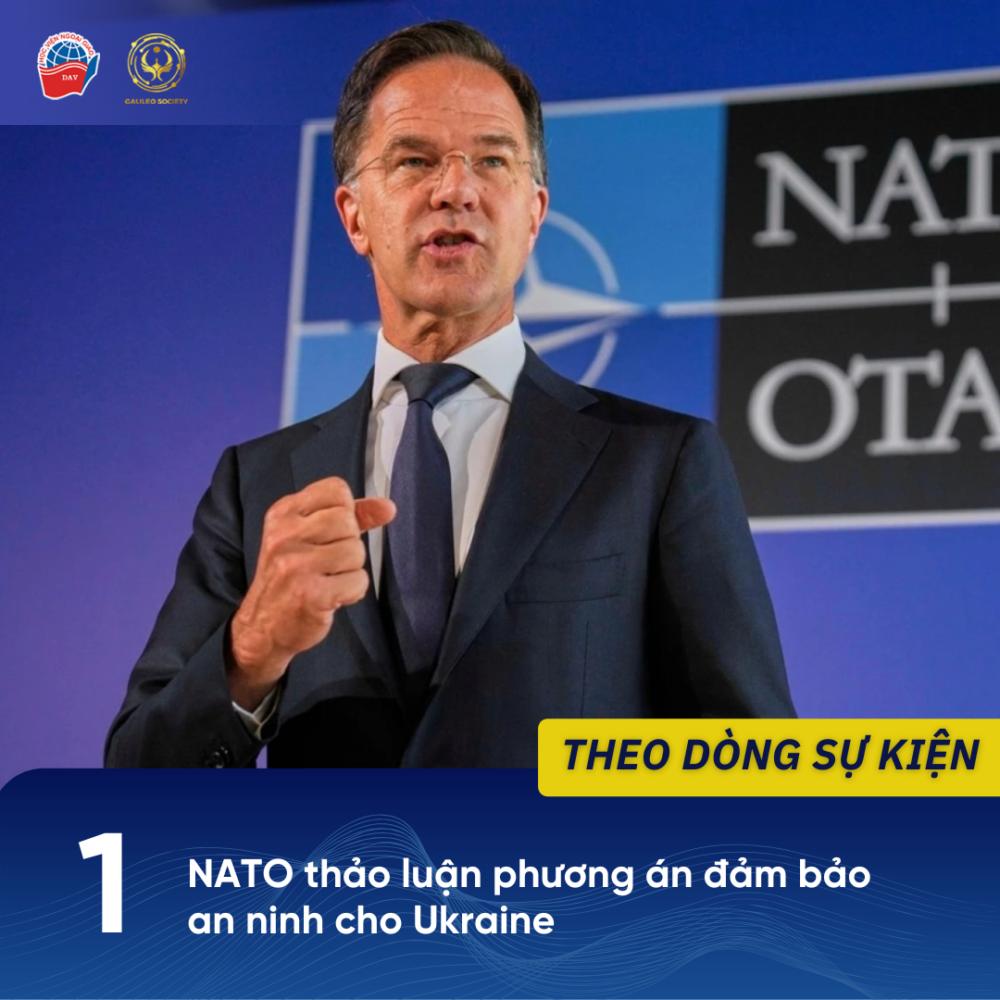
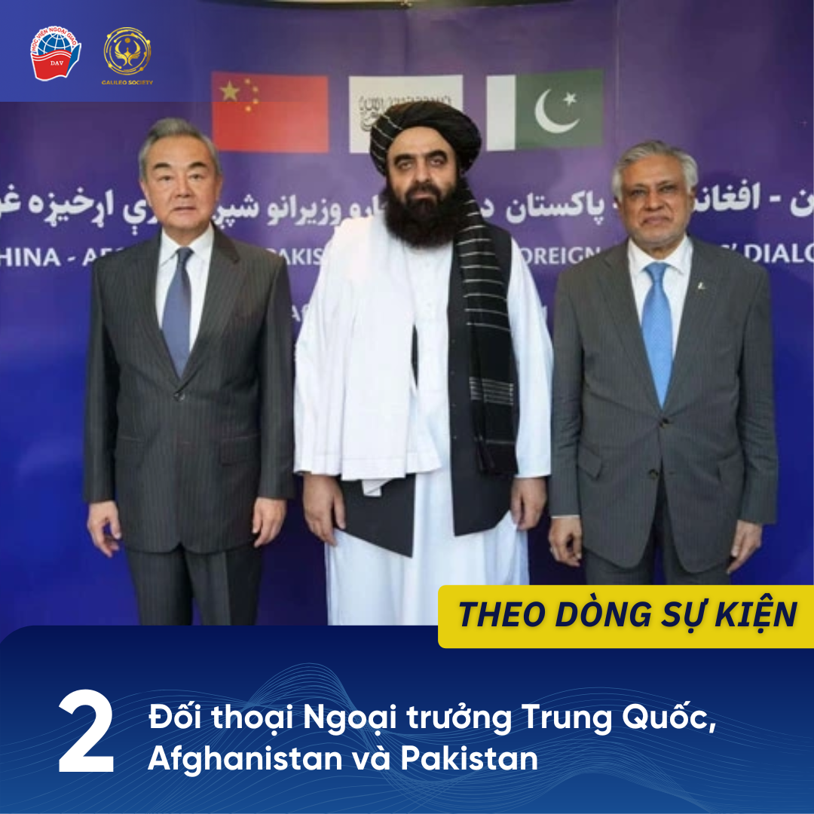
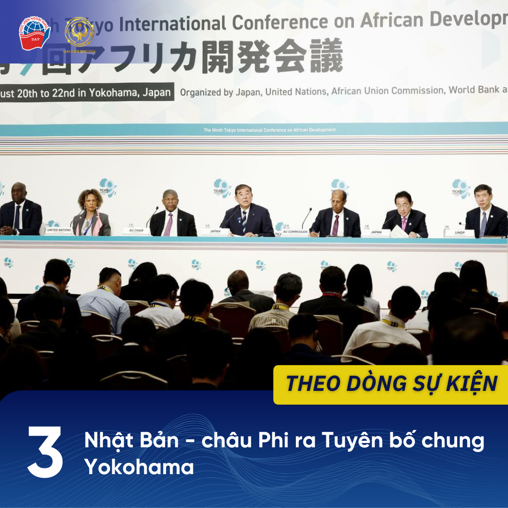
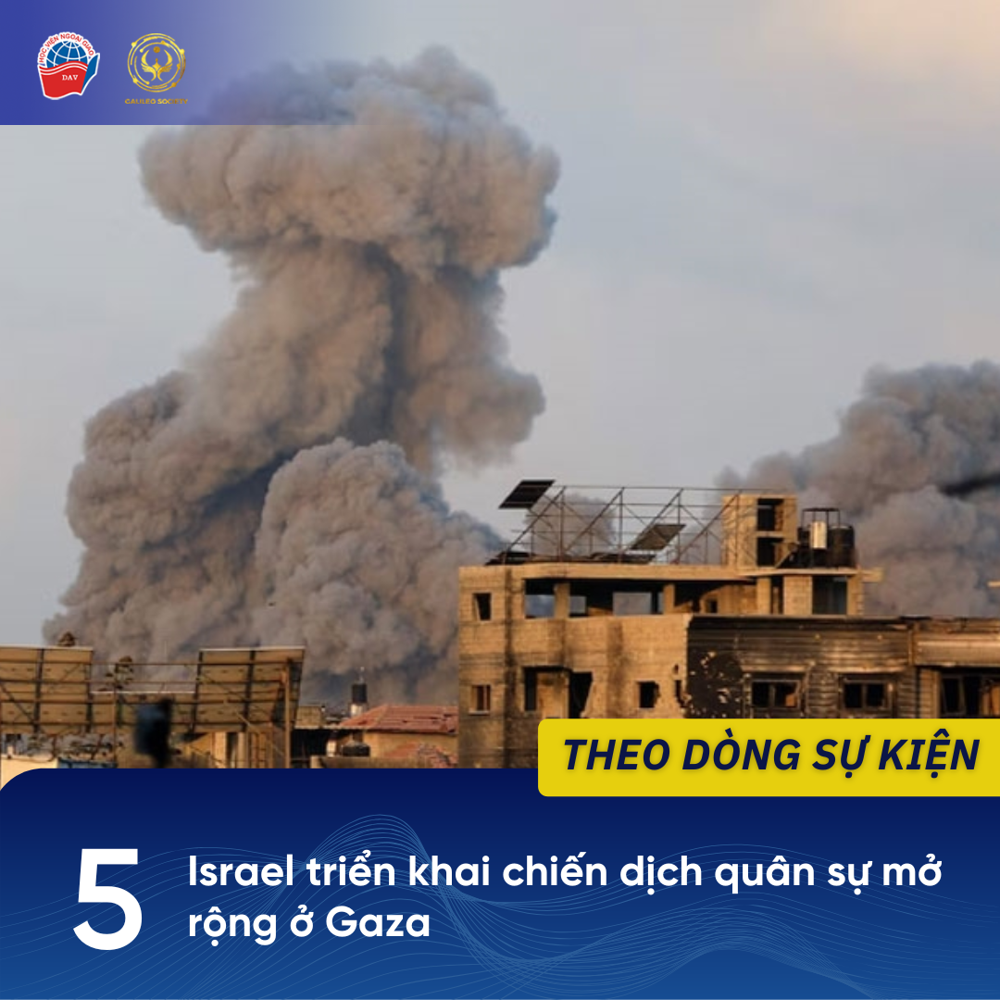

1 NATO thảo luận phương án đảm bảo an ninh cho Ukraine
Ngày 20/08, các bộ trưởng quốc phòng của Tổ chức Hiệp ước Bắc Đại Tây Dương (NATO) đã tổ chức cuộc họp trực tuyến tại thủ đô Brussels - Bỉ nhằm thảo luận về các biện pháp đảm bảo an ninh lâu dài cho Ukraine.
Cuộc họp cấp bộ trưởng của NATO được tổ chức trong khuôn khổ tham vấn thường kỳ, quy tụ đầy đủ 32 quốc gia thành viên cùng một số đối tác. Cuộc họp lần này chủ yếu tập trung vào các trọng tâm chính như duy trì sự hỗ trợ quân sự - tài chính ổn định để củng cố năng lực phòng thủ, đồng thời xây dựng các cơ chế bảo đảm an ninh mang tính chiến lược cho Kiev.
Giới quan sát cho rằng cuộc họp lần này đã thể hiện quyết tâm của NATO trong việc duy trì sự đoàn kết và hỗ trợ cho Ukraine cho dù vẫn còn tồn tại những bất đồng về cách thức và phạm vi hỗ trợ quân sự cho Kiev. Đây cũng là bước chuẩn bị quan trọng hướng tới các quyết định chính trị lớn hơn tại Hội nghị thượng đỉnh NATO dự kiến diễn ra vào cuối năm, nơi vấn đề tư cách thành viên tương lai của Ukraine cũng sẽ được thảo luận.
NGUỒN THAM KHẢO:
“NATO thảo luận đảm bảo an ninh cho Ukraine,” VOV, 20/8/2025, truy cập 23/8/2025, https://vov.vn/the-gioi/nato-thao-luan-dam-bao-an-ninh-cho-ukraine-post1224245.vov
“Mỹ, NATO bàn về an ninh Ukraine khi ông Trump nỗ lực thúc đẩy đàm phán,” Dân trí, 21/8/2025, truy cập 23/8/2025, http://dantri.com.vn/the-gioi/my-nato-ban-ve-an-ninh-ukraine-khi-ong-trump-no-luc-thuc-day-dam-phan-20250821161857118.htm
2 Đối thoại Ngoại trưởng Trung Quốc, Afghanistan và Pakistan
Ngày 20-8, Ngoại trưởng Trung Quốc Vương Nghị đã tới thủ đô Kabul, bắt đầu chuyến thăm Afghanistan và tham dự Đối thoại Bộ trưởng Ngoại giao Trung Quốc - Afghanistan - Pakistan lần thứ 6. Đây là lần đầu tiên cơ chế này được tổ chức tại Afghanistan kể từ khi Taliban lên nắm quyền, và diễn ra ngay trước thềm Hội nghị Thượng đỉnh Tổ chức Hợp tác Thượng Hải (SCO) tại Thiên Tân.
Tại hội nghị, ba bên khẳng định sẽ tăng cường hợp tác trong các lĩnh vực chính trị, an ninh, thương mại, giáo dục, y tế và văn hóa, đồng thời nhấn mạnh sự cần thiết phải phối hợp chống khủng bố và tội phạm xuyên quốc gia. Trung Quốc tái khẳng định vai trò trung gian nhằm thúc đẩy cải thiện quan hệ Pakistan - Afghanistan và duy trì ổn định khu vực.
Theo giới quan sát, cuộc đối thoại lần này cho thấy Bắc Kinh ngày càng đóng vai trò nổi bật trong việc định hình cơ chế hợp tác an ninh và phát triển tại Nam Á - Trung Á, trong bối cảnh khu vực vẫn đối mặt nhiều thách thức.
NGUỒN THAM KHẢO:
1. “Đối thoại Ngoại trưởng Trung Quốc-Afghanistan-Pakistan lần đầu tại Afghanistan,” VOV.vn, 20/8/2025, truy cập 23/8/2025, https://vov.vn/the-gioi/doi-thoai-ngoai-truong-trung-quoc-afghanistan-pakistan-lan-dau-tai-afghanistan-post1224156.vov
2. Fan Anqi và Deng Xiaoci, “China, Pakistan, Afghan FMs meet for talks, expected to deepen regional cooperation,” Global Times, 20/8/2025, truy cập 23/8/2025, https://www.globaltimes.cn/page/202508/1341348.shtml
3. Kamran Yousaf, “Kabul hosts Pakistan, China FMs for dialogue,” The Express Tribune, 20/8/2025, truy cập 23/8/2025, https://tribune.com.pk/story/2562166/kabul-hosts-pakistan-china-fms-for-dialogue
3 Nhật Bản - châu Phi ra Tuyên bố chung Yokohama
Ngày 20/8, Hội nghị Quốc tế Tokyo về Phát triển châu Phi (TICAD) lần thứ 9 đã chính thức khai mạc tại Yokohama, Nhật Bản, và kéo dài trong 3 ngày (20 - 22/8), với sự tham dự của lãnh đạo và đại diện khoảng 50 quốc gia châu Phi, do Thủ tướng Nhật Bản Ishiba Shigeru và Tổng thống Angola Joao Lourenco đồng chủ trì..
Hội nghị TICAD lần này tập trung vào ba chủ đề chính: hòa bình và ổn định, các vấn đề kinh tế và phát triển xã hội. Trong tuyên bố chung được đưa ra sau hội nghị, các bên đã nhất trí hợp tác để hiện thực hóa “nguồn cung ổn định và phát triển có trách nhiệm” đối với những khoáng sản quan trọng trong bối cảnh vấn đề đảm bảo an ninh kinh tế toàn cầu ngày càng cấp thiết. Bên cạnh đó, các bên cũng nhấn mạnh tầm quan trọng của quản lý nợ công hiệu quả và thượng tôn pháp luật, đồng thời khẳng định sự cần thiết của một quan hệ đối tác “công bằng và bình đẳng”, hỗ trợ các nước châu Phi trong việc chế biến và gia tăng giá trị tài nguyên tại chỗ.
Kết thúc hội nghị, Thủ tướng Ishiba bày tỏ hy vọng TICAD 9 sẽ được ghi nhớ như một điểm khởi đầu mới cho bước tiến vượt bậc của Châu Phi, đồng thời củng cố mối quan hệ đối tác mạnh mẽ hơn giữa Nhật Bản và Châu Phi.
NGUỒN THAM KHẢO:
1. “Hội nghị TICAD: Nhật Bản và các nước châu Phi ra Tuyên bố chung Yokohama” Báo Thế giới & Việt Nam, 22/8/2025, truy cập 25/8/2025,
https://baomoi.com/hoi-nghi-ticad-nhat-ban-va-cac-nuoc-chau-phi-ra-tuyen-bo-chung-yokohama-c53056115.epi
2. “The 9th Tokyo International Conference on African Development (TICAD 9) Closing Ceremony”, Ministry of Foreign Affairs of Japan, 22/8/2025, truy cập 25/8/2025,
https://www.mofa.go.jp/af/af1/pageite_000001_00004.html
4 Hàn Quốc công bố kế hoạch phi hạt nhân hoá với Triều Tiên

Ngày 21/8, Tổng thống Hàn Quốc Lee Jae Myung tuyên bố sẽ theo đuổi kế hoạch phi hạt nhân hóa 3 giai đoạn với Triều Tiên. Tổng thống cho biết, trong giai đoạn đầu, Hàn Quốc sẽ tìm cách đình chỉ các chương trình hạt nhân và tên lửa của Triều Tiên. Tiếp đó, trong giai đoạn thứ hai và thứ ba, Hàn Quốc sẽ tìm cách thu hẹp và xóa bỏ chương trình hạt nhân của Triều Tiên.
Trong khi duy trì sự phối hợp chặt chẽ với Mỹ, Hàn Quốc sẽ tích cực theo đuổi đối thoại liên Triều để thiết lập các điều kiện cần thiết cho mục tiêu này. Ngoài vấn đề hạt nhân, ông Lee còn đề xuất phát triển tuyến hàng hải Bắc Cực như một lĩnh vực hợp tác tiềm năng giữa hai miền Triều Tiên cùng với Mỹ, Nhật Bản và Nga.
Về phía Triều Tiên, trong những ngày gần đây, nước này đã bác bỏ những đề nghị hòa bình từ Hàn Quốc, tuyên bố rằng Seoul không thể là đối tác ngoại giao của Bình Nhưỡng.
NGUỒN THAM KHẢO:
1. “Hàn Quốc công bố kế hoạch 3 giai đoạn với Triều Tiên”, VTVOnline, 22/8/2025, truy cập ngày 25/8/2025,
https://vtv.vn/han-quoc-cong-bo-ke-hoach-3-giai-doan-voi-trieu-tien-100250822101145523.htm
2. “Lee vows to pursue 3-stage denuclearization plan for N. Korea”, The Korea Herald, 21/8/2025, truy cập ngày 25/8/2025,
https://www.koreaherald.com/article/10558448
5 Israel triển khai chiến dịch quân sự mở rộng ở Gaza
Ngày 21/8, Israel đã bước vào giai đoạn đầu tiên của kế hoạch tấn công thành phố Gaza sau khi chính phủ phê duyệt kế hoạch tiếp quản khu vực này, bao gồm việc triệu tập thêm 60.000 quân dự bị để triển khai cho một chiến dịch quân sự mở rộng. Người phát ngôn Lực lượng Phòng vệ Israel (IDF), Chuẩn tướng Effie Defrin, nhấn mạnh IDF sẽ “gia tăng thiệt hại đối với Hamas tại thành phố Gaza, một thành trì của khủng bố”, đồng thời tuyên bố phá hủy cơ sở hạ tầng “cả trên mặt đất lẫn dưới lòng đất” và cắt đứt mối liên hệ giữa Hamas với người dân địa phương.
Các đợt tấn công mới dự kiến sẽ buộc hàng nghìn người Palestine ở phía bắc Gaza phải di chuyển xuống phía nam, nơi vốn đang chìm trong khủng hoảng nhân đạo và nạn đói do chiến sự kéo dài cùng các hạn chế viện trợ. Cùng thời điểm, chính quyền Israel cũng phê duyệt dự án định cư gây tranh cãi tại khu vực Bờ Tây bị chiếm đóng. Kế hoạch này về cơ bản sẽ chia cắt Bờ Tây thành hai phần, làm dấy lên lo ngại xóa bỏ triển vọng về một Nhà nước Palestine độc lập và có lãnh thổ liền mạch
NGUỒN THAM KHẢO:
"Israel triển khai chiến dịch quân sự mở rộng ở Gaza," Quân đội nhân dân Online, ngày 22/08/2025, truy cập 23/08/2025, http://qdnd.vn/quoc-te/doi-song/israel-trien-khai-chien-dich-quan-su-mo-rong-o-gaza-842467.
“Kế hoạch của Israel ở Gaza: Nỗi lo thảm họa,” Tuổi Trẻ Online, ngày 21/08/2025, truy cập ngày 223/08/2025 https://tuoitre.vn/ke-hoach-cua-israel-o-gaza-noi-lo-tham-hoa-2025082123360191.htm
“Khủng hoảng nhân đạo gia tăng tại Gaza giữa chiến dịch quân sự mới của Israel,” VOV, 21/7/2025, truy cập 23/8/2025, https://vov.vn/the-gioi/khung-hoang-nhan-dao-gia-tang-tai-gaza-giua-chien-dich-quan-su-moi-cua-israel-post1216295.vov.